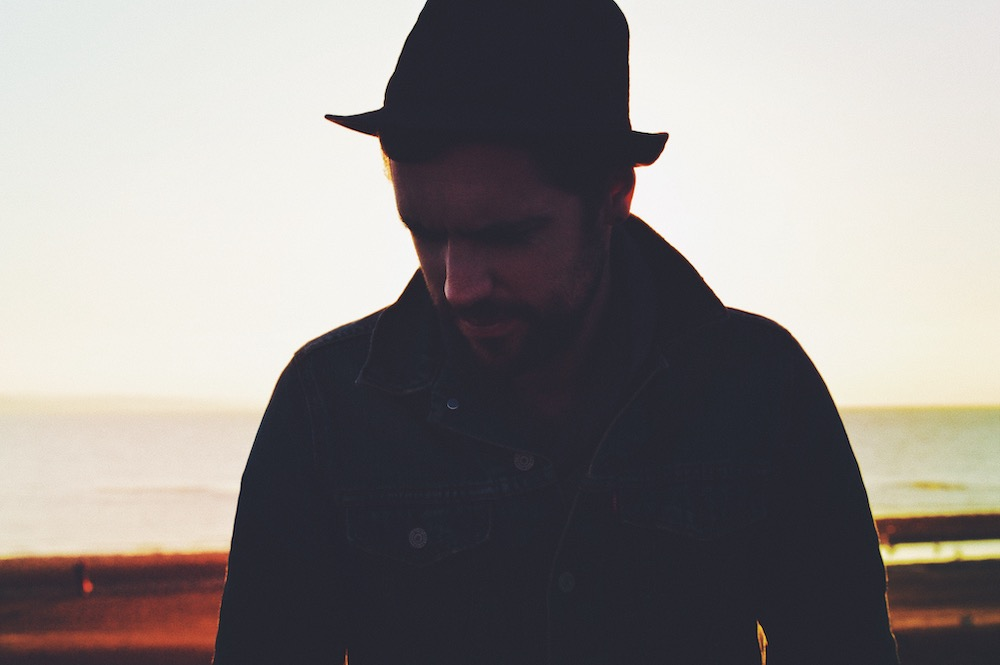

<section class="about-top">
	<div class="row">
		<div class="col-md-6">
			<div class="about-img-left">
				
			</div>
		</div>
		
		<div class="col-md-6">
			<div class="about-img-right">
				
				<p>Jim Andrew Rogers is an indie folk singer-songwriter from the south coast, UK.<br><br>

		In 2014 Rogers co-founded the band The Bright Expression. He travelled out to Redding, California to record a full length record and spend the next few years playing events and festivals across the UK and Europe.<br><br>

		Now writing as a solo artist Rogers has used his previous years of musical craft and songwriting to pen a new wave of indie folk songs starting with the release 'Worlds Apart'. His latest album 'Heart like a sea' encapsulates introspective lyrics and melodies with songs that contain elements of folk-based sounds.</p>
			</div>
		</div>
	</div>
</section><!--end home section-->